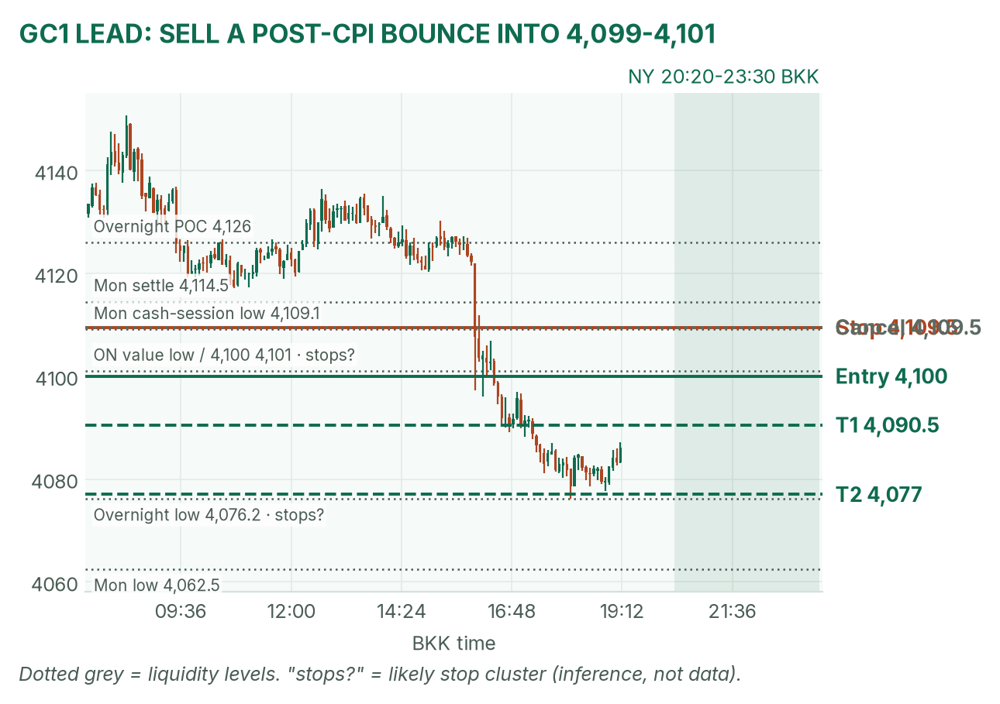
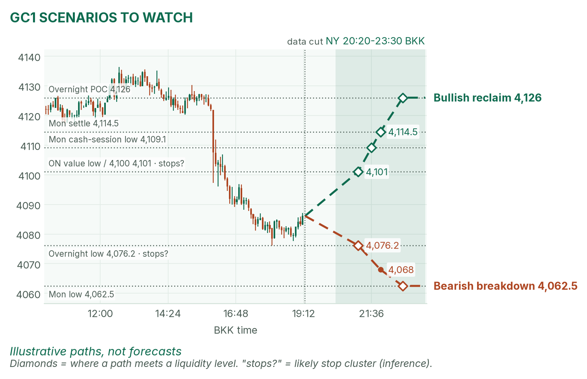
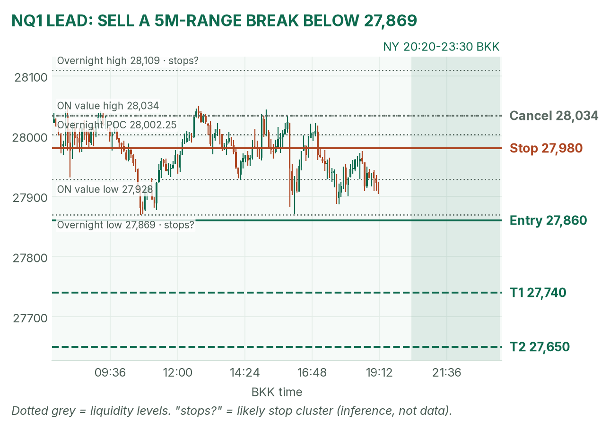
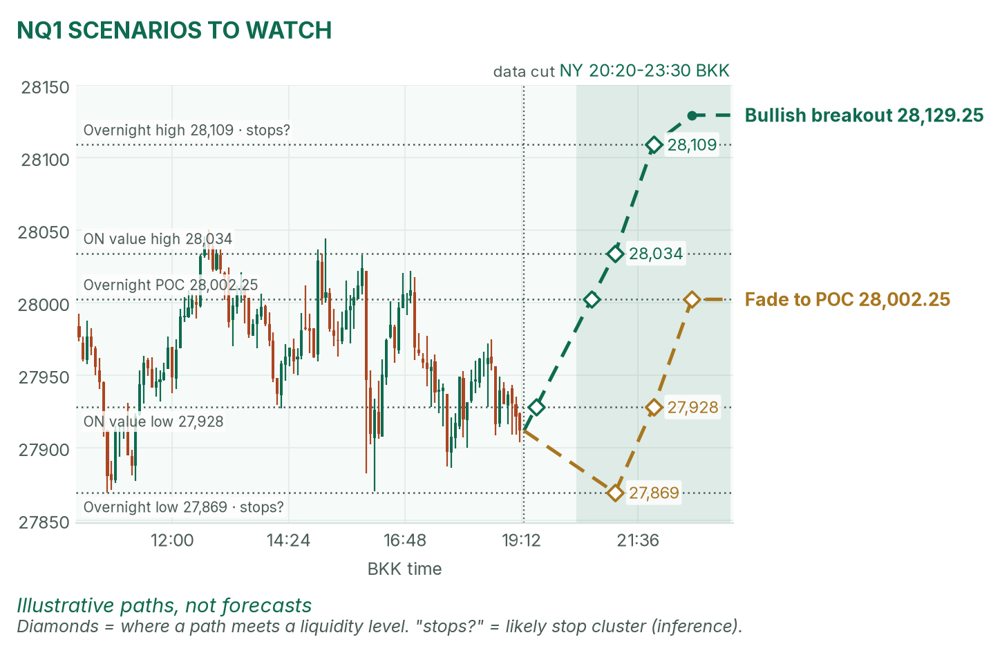

Waller hit gold first. CPI at 20:30 decides the rest.
Window 20:20–23:30 BKK (US winter time). Data cut 19:15 BKK: GC 4,086.1, NQ 27,911.75 (TopstepX Dec contracts, completed 5-minute bars). Levels only, flat by 23:30. Ideas, not advice. April's pre-NY brief (~19:00 BKK) was read.
Summary
GC: sell a post-CPI bounce into 4,099–4,101, stop 4,109.5, targets 4,090.5 and 4,077. About 35% once filled.
NQ: sell a break below 27,869, entry 27,860, stop 27,980, targets 27,740 and 27,650. About 33%.
CPI lands at 20:30, ten minutes into the window, and Logan speaks at 21:35. No entries 20:25–20:32 or 21:30–21:37.
The market story
Fed Governor Waller, at 16:00, backed a December hike even if inflation cools, and a half-point hike if core CPI is 0.3% or more, per April. Hike odds jumped to about 99%. Short-term yields rose most (2-year +6.2 bp), and gold, which pays no interest, fell from about 4,122 to 4,076.2 in about two hours.
Your current lesson applies directly: a quarter-point hike is now priced in, so tonight only the surprise moves price. A 0.2% core print is "as expected" and changes little. A 0.3% print is the hawkish surprise; 0.1% is the relief surprise. My bias: bearish gold, mildly bearish Nasdaq, but expect a violent first minute either way.
First Fed reaction to CPI. Hawkish adds to the move.
Past CPI move sizes not measured today. Outside the window: the 10-year auction (Wed 01:00). No-trade zones: 20:25–20:32 and 21:30–21:37. Sources: April's brief (Reuters poll via CNBC, BLS, Fed calendar).
Levels to watch
Level
GC
NQ
Overnight high (since 06:00)
4,156.2
28,109.00
Overnight value high
4,153.0
28,034.00
Overnight POC
4,126.0
28,002.25
Monday settle (April)
4,114.5
28,014.50
Overnight value low
4,101.0
27,928.00
Overnight low
4,076.2
27,869.00
Monday low
4,062.5
26,751.25
Expected NY range (4-session median)
about 33 points
about 745 points
Gold (GC1)
Bias: bearish. Gold sits 15 points under its value low. The usual NY rule fades the COMEX range back to the POC, but CPI at 20:30 will likely blow that range apart. So I wait for CPI and sell the bounce.
The trade: sell the bounce
Entry
4,099–4,101 (plan 4,100), after 20:32, on a CPI pop that stalls under the 4,101 value low and 4,100
Stop
4,109.5, above Monday's 4,109.1 cash-session low
Targets
1R partial 4,090.5 · T2 4,077 (2.4R), just above the overnight low
Cancel
Trades below 4,076.2 before the fill, a 5m close above 4,109.5, or no fill by 22:30
Probability
~35%, an estimate. Basis: the 23-point target is about 0.7 of a typical NY range, and GC NY fades in my 42-session study were weak (not statistically significant).
Why: old support often turns into resistance. A soft core print that closes 15 minutes above 4,109.5 kills the idea: no trade. April agrees on the in-line and hot paths, where gold stays under 4,114.5.

GC 5-minute bars into 19:15. Entry at the value low and 4,100.

Illustrative paths, not forecasts.
Scenarios to watch
Bullish reclaim: soft core and a 15m close above 4,101 that holds. Aims for 4,114.5, then the 4,126 POC.
Bearish breakdown: hot core and a 5m close below 4,076.2. Aims for 4,062.5, Monday's low.
Nasdaq (NQ1)
Bias: mildly bearish. NQ sits under its value low while yields rise. The NY rule: trade breakouts of the 21:30–21:35 range. Use VWAP (the volume-weighted average price) as a filter only after about 22:00: stay short only below it.
The trade: bearish range breakout
Entry
Sell stop 27,860, under the 27,869 overnight low, after 21:37. Only if the 21:30–21:35 range low sits above 27,860, so the break clears both.
Stop
27,980, above the 27,977 high of the last two hours
Targets
1R partial 27,740 · T2 27,650 (1.75R)
Cancel
5m close above 28,034 before entry, or no break by 22:30
Probability
~33%, an estimate. Basis: NQ 5-minute breakouts averaged +0.37R over 31 sessions (not significant); the 210-point target is under a third of the typical 745-point NY range.
Why: buyers' stops likely sit under 27,869 (my inference). A stop run is price taking out a level where many stops rest, then speeding up. If CPI is soft and NQ is above 28,034 by 21:30, this is no trade. April agrees on the hot path, where 27,869 breaks.

NQ 5-minute bars into 19:15. The overnight low has held twice.

Illustrative paths, not forecasts.
Scenarios to watch
Bullish breakout: soft core and a 5m close above 28,034. Aims for 28,109, then Monday's 28,129.25 high.
Mean reversion: a flush to 27,869 that snaps back above 27,928. Aims for the 28,002.25 POC.
6E (not traded): 1.12345, near the 1.1230 overnight low; a hot CPI likely breaks it.
Before you click
ORB bases. GC NY: 20:20 COMEX open until a 2-minute candle's volume drops below half the first two's average, fade to POC. NQ NY: 21:30–21:35 range, trade breakouts. GC and 6E London: 15:00–15:30 range (fade gold, break the euro).
Checklist. 1) Room to today's max loss? 2) Within daily rules? 3) No release within 30 minutes? 4) Agrees with the bias? 5) At a marked level? 6) Setup tagged? 7) Entry, stop, 1R partial, target set? 8) Calm, not chasing?
Reset (60 seconds). Hands off the mouse. Breathe in 4, hold 4, out 6, five times. Name the feeling in one word. Say the plan aloud. "Eager" or "frustrated"? Wait 5 minutes.